Formula 1 Aerodynamics
One of the most dramatic examples of an aerodynamic device is a Formula 1 racing car. It wasn't always so, in fact pre-1967 F1 cars made very little use of aerodynamics. The thinking at that time was to optimize cars for straight-line speed, i.e., minimize drag.
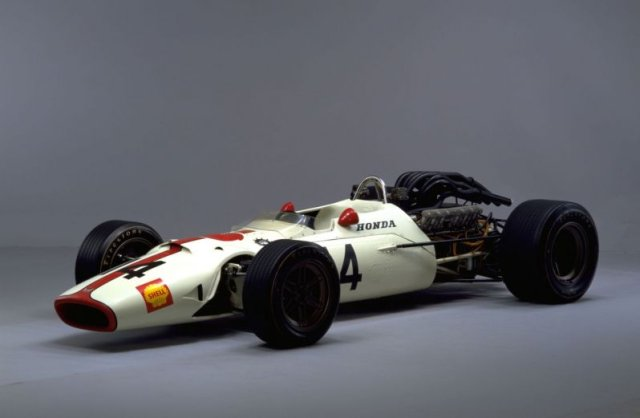1967 Honda Formula 1 Car, pre-wing era
Affordable Aerodynamic Analysis Available Now
Are you ready for a 30-day free trial of Caedium Professional?

Downforce
Elsewhere, revolutionaries were thinking differently - what if we optimized cars for faster cornering speeds? As unintuitive as it sounds, cornering speed is more important to faster lap times than straight-line speed. This thinking led to the attachment of an inverted airplane wing to the rear of the car to improve downforce. Downforce equates to extra 'weight' on the tires allowing faster cornering speeds. While increasing drag and sacrificing straight-line speed, the revolution started a relentless improvement in lap times. Motor racing would never be the same again.
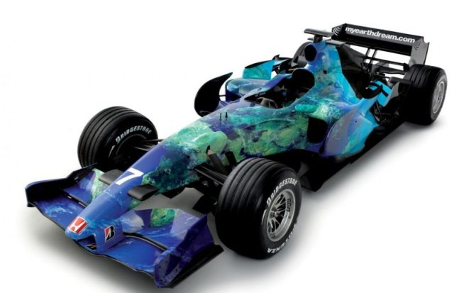2007 Honda Formula 1 Car
Today's F1 cars are a tour-de-force in aerodynamic design, optimized to generate downforce. While F1 cars appear to be governed by aerodynamic design considerations, which they are, more importantly they are also governed by rules that attempt to keep speeds, especially cornering speeds, within safe bounds. Within these bounds let's take a tour of the modern day aerodynamics of an F1 car.
Wheels
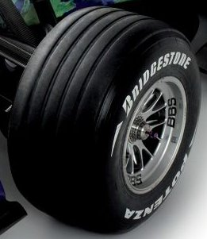Wheel on Formula 1 Car
The defining aerodynamic feature of an F1 car is the exposed wheels. Exposed wheels are the anti-thesis of optimal aerodynamics in that they contribute significant drag and lift (the opposite of downforce). They also shed highly turbulent air in their wake, which is essentially useless as a feeder for other aerodynamic devices on the car. The distinctive Coca-Cola bottle shape of most open-wheel cars helps (in part) to avoid the turbulent wake from the front wheels disrupting the flow over and under the rest of the car.
Wings
The front and rear wings account for the majority of the overall downforce (approximately 66%) on an F1 car. Typically, multi-element airfoil sections optimized for relatively low-speed airflow (at least by aerospace standards) are employed with end plates to minimize induced drag.
Front Wing
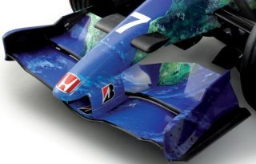Front Wing on Formula 1 Car
The front wing accounts for approximately 33% of the total car downforce. The front wing end plates reduce drag and also direct air over the front wheels in an attempt to reduce drag. The front wing is shaped to direct air to the underside of the car and ultimately feed the undertray (described later). Shaping is also employed to allow air to cool the brakes and radiators. The front wing is a compromise between producing downforce and directing air to other areas of the car.
Rear Wing
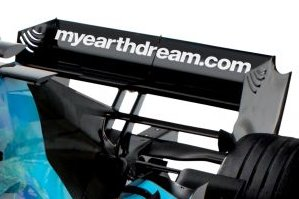Rear Wing on Formula 1 Car
The upper portion of the rear wing is a traditional multi-element airfoil (similar to those deployed on aircraft during landing) with end plates, and generates approximately 33% of the total car downforce. The lower portion of the rear wing, usually a single airfoil, 'pulls' or drives air from the undertray.
Undertray
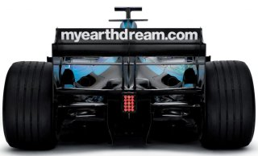Rear of Formula 1 CarShowing precious little of the secretive diffuser
F1 rules prohibit under-car shaping or venturis, and mandate a minimum ride height enforced by a relatively low-tech wear plank attached underneath the car. However, there is still scope to shape the area directly under and behind the rear axle line. Thus, a rear diffuser combined with the airfoil in the lower portion of the rear wing is employed to produce significant downforce, approximately 25% of the total car downforce.
Body Work
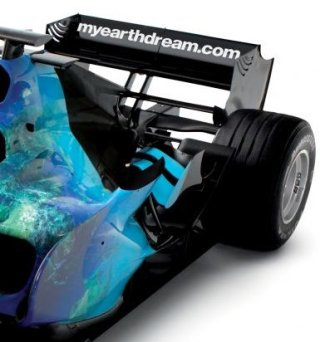Engine Cover on Formula 1 Car
The shape of the rear body engine cover is dictated by the rear wheels and thus narrows to avoid them and also to encourage the flow adjacent to the cover to remain attached (minimizing drag). The area immediately in front of the rear wheels has a 'flip up' to better align the air with the wheel and thus reduce drag. Close by, and sometimes integrated into the 'flip ups,' are winglets (small airfoils with end plates) to create additional downforce. There are splitter plates positioned close to the front of the rear tire that produce downforce by inducing a stagnation point (high pressure) on the upper surface of the splitter close to the wheel. The same splitter plate technique is used at the front of the wear plank. Notice an airfoil-shaped 'chimney' that vents hot air after passing through the radiators.
Radiator Cooling Inlet
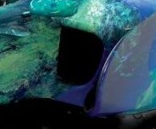Radiator Inlet
The radiator cooling ducts are positioned on either side of the cockpit with the aim of providing relatively high-pressure, undisturbed flow at their entrance. Their position and size are crucial to achieve adequate air to feed the radiators and thus cool the engine. The front wing shape allows relatively undisturbed air to enter the radiator ducts and in so doing trades off downforce.
Engine Air Intake
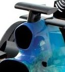Engine Air Inlet
The engine air intake is positioned behind and above the driver's head to capture high-pressure, relatively undisturbed air. Inside the air intake is an expansion chamber (diffuser) that slows the air down and thus increases its pressure ready for its passage into the engine inlet manifold. The air intake is positioned away from sources of heat, such as the track and radiators, to minimize the air temperature. The intake faces the direction of travel to take advantage of a small ram effect the car induces as it moves forward through the air.
Barge Boards
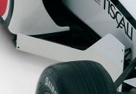Barge Board
Barge boards were once a primary feature shielding the radiator ducts from the turbulent wake of the front wheels, or so we thought. In recent designs, barge boards were replaced by vortex generators that direct vortex cores under the car with the aim of feeding the rear diffuser with high energy flow, thus increasing the diffuser’s effectiveness. It appears that traditional barge boards may have induced a similar effect but less effectively.
Suspension
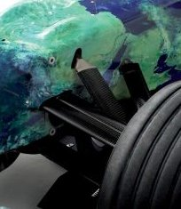Front Suspension
The suspension members at the front of the car use airfoil rather than circular cross sections to minimize drag. A well-shaped airfoil can have almost 10 times less drag than the equivalent cylinder.
There you have it – a brief aerodynamic tour of an F1 car. If you are keen to find out more there are a couple of excellent books on the subject.
Alongside traditional wind tunnels, Computational Fluid Dynamics (CFD) is playing an ever increasing role in aerodynamic design evaluation. Read about the history of Advantage CFD, a leading motor racing CFD consultancy.
Feedback
Questions? Ideas? Problems?

Recent blog posts
- CFD Simulates Distant Past
- Background on the Caedium v6.0 Release
- Long-Necked Dinosaurs Succumb To CFD
- CFD Provides Insight Into Mystery Fossils
- Wind Turbine Design According to Insects
- Runners Discover Drafting
- Wind Tunnel and CFD Reveal Best Cycling Tuck
- Active Aerodynamics on the Lamborghini Huracán Performante
- Fluidic Logic
- Stonehenge Vortex Revealed as April Fools' Day Distortion Field
 Get our Blog feed
Get our Blog feed
Comments
More on Rear Diffusers
For more on rear diffusers try – Secrets of Underbody Tunnels, Rear Diffusers and Venturis.
BMW Sauber F1 Wind Tunnel
Want to see the BMW Sauber F1 team testing a scale model of an F1 racecar in their wind tunnel?